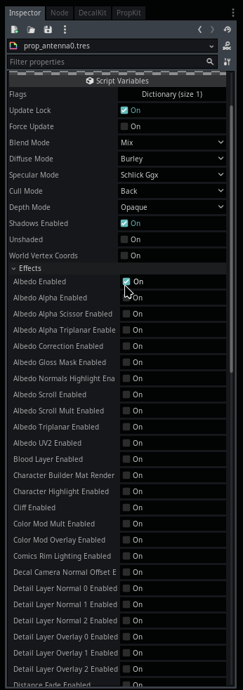

Module: spatial_ubershader
Documentation last edited: October 23, 2025 at 14:33 UTC
Description
Okay, so...
SpatialMaterial
. Sounds like a plan. Sounds like EVERYTHING you'd ever need from a material in 3D. Yeah. Sounds nice. Sounds plausible. But what happens when you use your gigabrain to add an additional shader effect? Oh no, it's falling apart! You have to use
ShaderMaterial
to make your own effects! And what if you wanna reuse something that
SpatialMaterial
had? Oh, well, dude, just copypaste it or something, we don't care. I was a little pissed so I made an ultimate spaghetti management system, guess what it is? That's right, that's that module.
"Ubershader"
is such a clever word, but really, it's all about automizing copypasting of the shader code. You don't have to do this 5-minute-task anymore, I spent ages refining that automized shit. Use it. Please. I beg you. Actually, it doesn't matter, all materials in this project ARE
UserSpatialUbershader
so you will experience a decent peer pressure to use this one :)
This module has two classes that you really need to know about:
SpatialUbershader
and
UserSpatialUbershader
.
SpatialUbershader
is practically the core logic of this module. This is the ultimate bombastic spaghetti combiner, mixer, manager, whatever the hell it is. However, this class alone isn't providing a user-friendly interface and due to how Godot works... Well, let's just say I was forced to do
UserSpatialUbershader
.
This class is NOT written by hand.
It provides export variables and all that fancy shit, but writing it by hand would be a suicide. That's why
"res://modules/spatial_ubershader/assets/code_generation_scene/code_generator.gd"
exists, an editor script that you can run to update code in
UserSpatialUbershader
. In other words,
UserSpatialUbershader
is just a fancier facade to
SpatialUbershader
, a fucking makeup if you wish. Hides the ugly face behind. We all love fancy lies, aren't we?
Using the material while being in trenches


What you need to understand this material is that it can have multiple effects. Even "albedo" map is an effect too. You just enable effects you need, when you are done: Click
"Force Update"
, it will update the shader code and paramaters that you can adjust. Each effect has its own designated group that you can extend and assign needed values/textures. Simple as that.
How to make your own badass effect
Listen here, son, it's a very hard and intimidating task... It requires a lot of patience... Actually who am I kidding really? Take a look at
"res://modules/spatial_ubershader/assets/effects/"
, scroll down the effects, notice some patterns all over the place. This project is pattern-ing hard, you know? Let's take a look at our beloved
"albedo"
effect.
.
└── albedo
├── config.tres
└── shader.tres
All your fancy-wancy shader effects MUST have two files:
"config.tres"
and
"shader.tres"
.
"config.tres"
is just a
SpatialUbershaderEffectConfig
GODDAMN THIS CLASS NAME IS KILLING ME oh I'm sorry I meant to say this is a config for your effect that is mainly useful to adjust its order priority, all effects are processed in a queue of sorts.
"shader.tres"
is the shader code for your spatial shader effect.
Shaders aren't just "shaders" in this case, they have some meta-processing stuff that you need to know about. Let's take our beloved albedo shader as an example:
shader_type spatial; //__IGNORE_LINE__
// Albedo texture input
//__ADD_PROPERTY::effect_tex::TEXTURE
uniform sampler2D effect_tex: hint_albedo;
// Color tint multiplier
//__ADD_PROPERTY::effect_color::COLOR
uniform vec4 effect_color: hint_color;
// UV Adjustment Flag Block
// __ADD_FLAG::effect_uv_tweak
// __FLAG::effect_uv_tweak
// Horizontal texture scale
//__ADD_PROPERTY::effect_UV_scale_x::FLOAT
uniform float effect_UV_scale_x = 1.0;
// Vertical texture scale
//__ADD_PROPERTY::effect_UV_scale_y::FLOAT
uniform float effect_UV_scale_y = 1.0;
// Horizontal texture offset
//__ADD_PROPERTY::effect_UV_offset_x::FLOAT
uniform float effect_UV_offset_x = 0.0;
// Vertical texture offset
//__ADD_PROPERTY::effect_UV_offset_y::FLOAT
uniform float effect_UV_offset_y = 0.0;
// __FLAG_END
//__FRAGMENT_SPLIT__
void fragment()
{ //__IGNORE_LINE__
// Base UV coordinates
vec2 effect_uv = UV;
// UV Adjustment Block (conditionally included)
// __FLAG::effect_uv_tweak
effect_uv.x *= effect_UV_scale_x; // Apply horizontal scale
effect_uv.y *= effect_UV_scale_y; // Apply vertical scale
effect_uv.x += effect_UV_offset_x; // Apply horizontal offset
effect_uv.y += effect_UV_offset_y; // Apply vertical offset
// __FLAG_END
// Sample texture and apply color tint
vec4 effect_tex_color = texture(effect_tex, effect_uv);
ALBEDO = effect_tex_color.rgb * effect_color.rgb;
}
//__IGNORE_LINE__
So, you might have noticed some of the commentary that doesn't really sound humane. Sounds like a machine went rogue and it's about to murder you. Well, that's what I call meta-processing, yeah. These comments are supposed to let
SpatialUbershader
know what the fuck it is supposed to do with your damn code. If you just feed it a shader with none of these things - it'll accept islam and refuse to work with you, infidel. Most likely it'll result in a broken generated shader code that won't do anything of value. Luckily for you, I'm here to help while mocking your ass. Here's the list of your damn comments that you MUST KNOW AND REMEMBER BY THE END OF READ.
Instead of "name" there can be anything you want, make sure the stars align though.
//__IGNORE_LINE__
Ignores a line. I mean... Woah, surprising? Okay, you need to place that fucker down in lines with "shader_type" and definitions of "void fragment()", "void vertex()" and "void light()", as well as their brackets. Otherwise the system will break. Harshly.
//__ADD_PROPERTY::name::TEXTURE
Registers a uniform variable as a texture.
//__ADD_PROPERTY::name::COLOR
Registers a uniform variable as a color.
//__ADD_PROPERTY::name::FLOAT
Registers a uniform variable as a float.
Damn, these three are so simple, isn't that surprising?
//__VERTEX_SPLIT__
Tells the damn machine that the next function is gonna be a vertex one and that the code belongs there.
//__FRAGMENT_SPLIT__
Tells the damn machine that the next function is gonna be a fragment one.
//__LIGHT_SPLIT__
Tells the damn machine that the next function is gonna be a light one.
// __ADD_FLAG::name
Adds a new flag for ubershader to process.
// __FLAG::name
Tells the damn machine that the next lines of code can only be added to the resulting shader if flag is active.
// __FLAG_END
Tells the damn machine that the flag processing is over so it can keep doing shit as always.
If you are still feeling confused, I'm suggesting you to do two things:
- Take a look at the existing effects, that trail of corpses can really teach you a lot.
- For more information, please reread.
Have fun.
General Information
Root directories list
assets, docs, src
Nodes
SpatialUbershader
SpatialUbershaderShaders